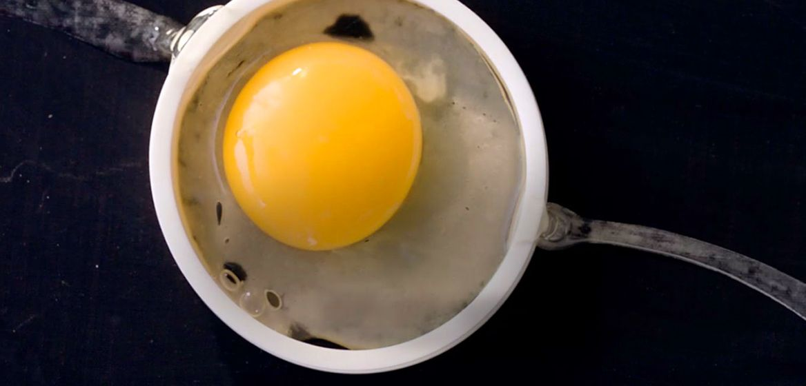
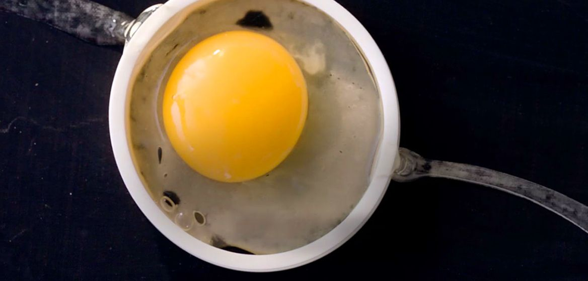
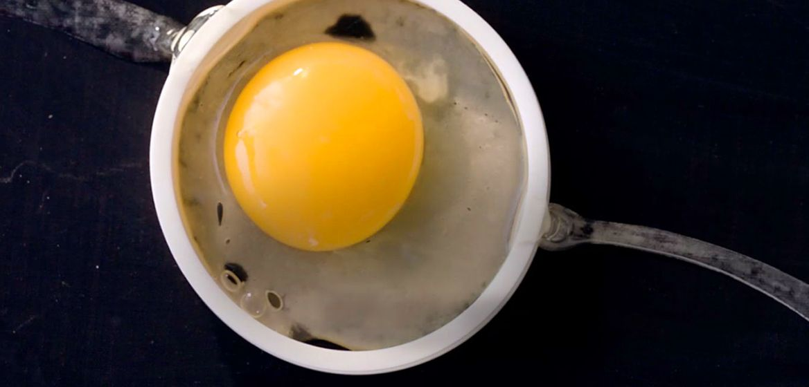

Quality food served to you every time. The food served here at McDonald's is guaranteed to be tailored to your liking. From breakfast options to your favorite chicken and fries, and even a treat for the kids! McDonald's is committed to serving the best food possible to eager customers.

We know you care about the food you eat, that’s why we use quality ingredients like 100% beef patties with no preservatives, fillers, or additives. And we use a select variety of crisp, quality apples such as Gala and Pink Lady. Take a deep dive into McDonald’s ingredients to find out what makes our food delicious.
The McDonald's Happy Meal has been enjoyed by families around the world for decades, bringing people together to share moments and create lasting memories. Just as every family around the world is different, the Happy Meal changes with them. Parents are looking for menu choices that they can feel good about feeding their kids, and that’s why we’re focused on evolving the Happy Meal and making balanced meals more accessible to families across the globe.
McDonald's is passionate about its food. We take great care to ensure that everything we provide on a daily basis is safe, of high quality, offers variety, and is created responsibly. This means we utilize 100% pure beef patties seasoned with only a touch of salt and pepper. It indicates that our Egg McMuffins are cooked with freshly cracked eggs. In the United States, we make our Filet-O-Fish sandwich with whitefish derived from responsibly managed wild-caught fisheries. It implies our Buttermilk Crispy Chicken contains real buttermilk, and our Chicken McNuggets are created from white flesh chicken. Simply defined, it means we're committed to constantly developing what's important to you.